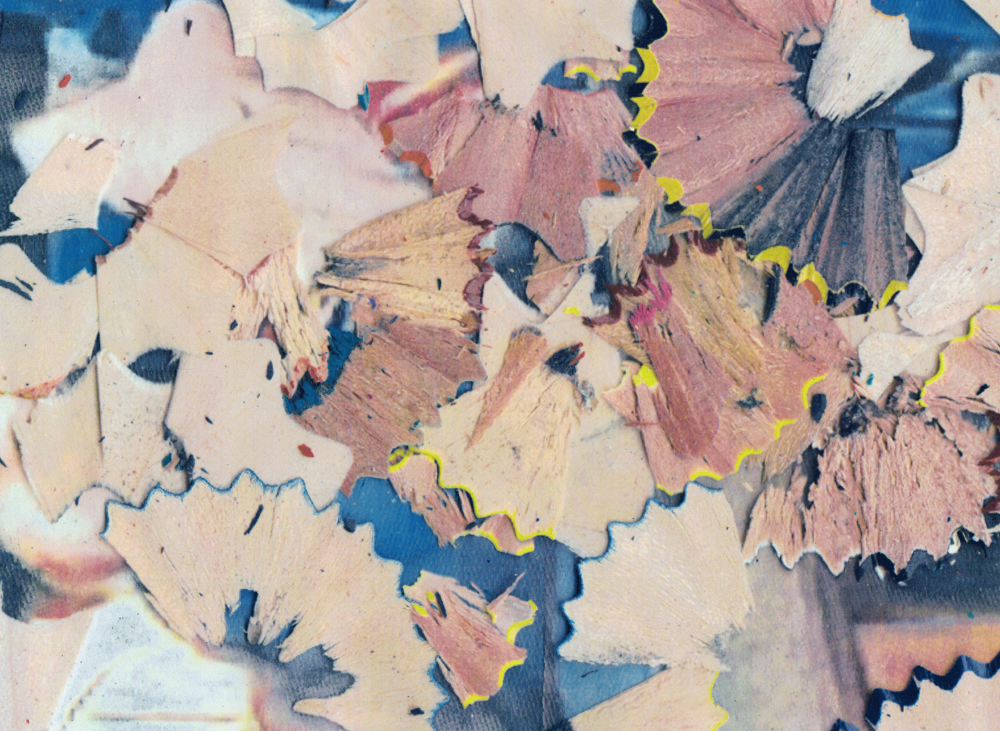
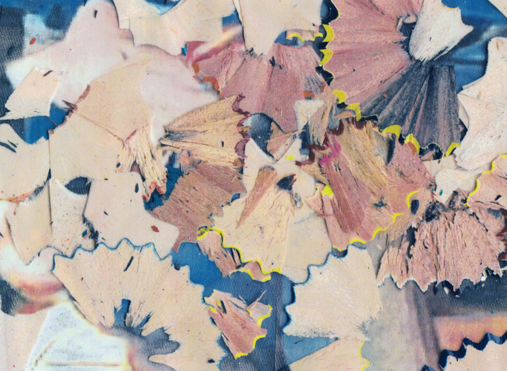

Frame of reference
2024
Installation
Frame of reference is an installation that explores the relationship between perception and context. The work consists of a series of framed abstract compositions that invite viewers to reconsider their understanding of spatial relationships and visual hierarchies.
By juxtaposing different visual elements within standardized frames, the installation creates a dialogue between containment and expansion, challenging the viewer to navigate between micro and macro perspectives.
Exhibition History
- Gallery Contemporary, New York, NY (2024)
- International Art Biennale, Venice, Italy (2024)
Materials
Mixed media, custom frames, digital prints on archival paper
Dimensions
Variable, installation approximately 4m × 6m